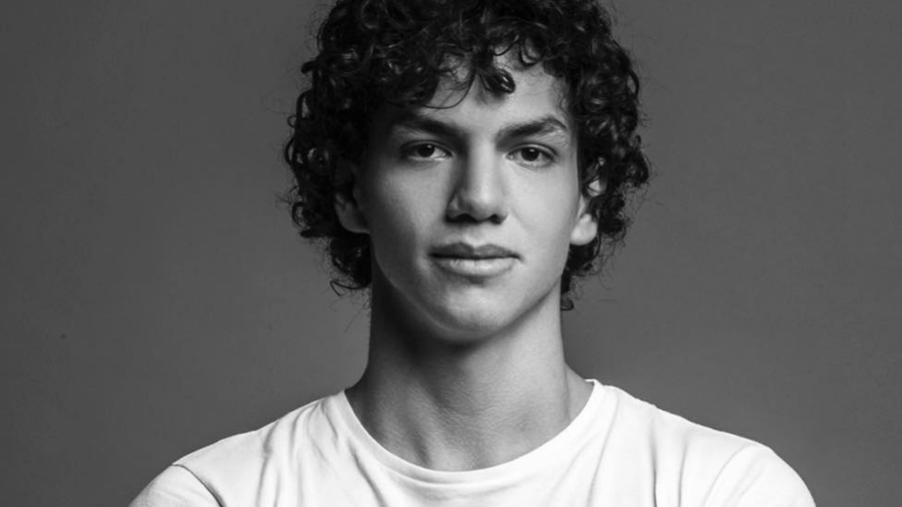
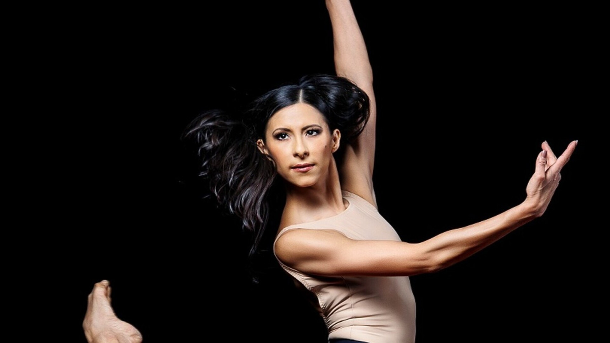
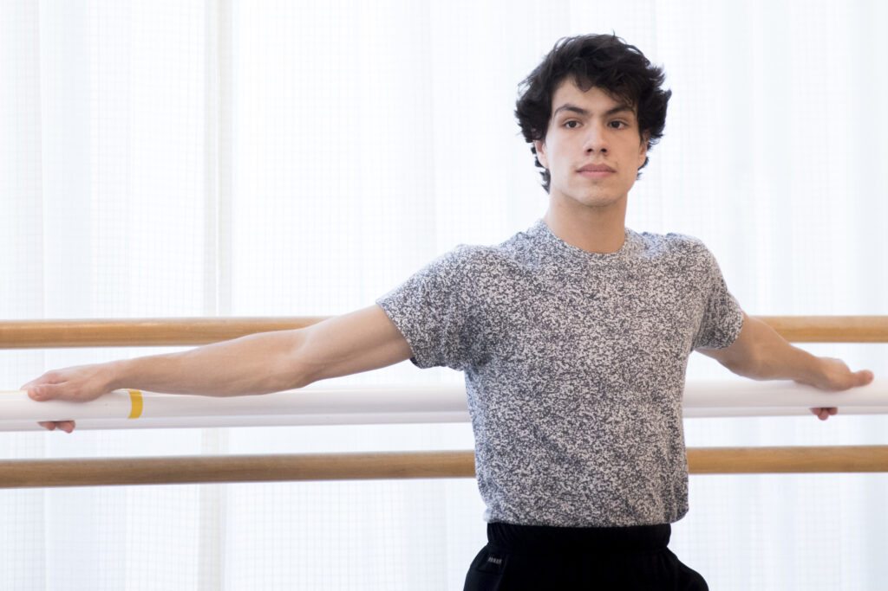

LOS MEXICANOS MAS FAMOSOS EN EL BALLET
Isaac Hernández & Elisa Carillo

A los 8 años da los primeros pasos en su carrera profesional con su padre, quien
le da todas
las
bases
técnicas del ballet clásico. Fue becario por el entonces CONACULTA, Secretaria
de Cultura
Federal INBA;
así como el American Ballet Theater en Nueva York y The Rock School for Dance
Education.La
Escuela de
Rock para la Educación en Danza es una escuela de ballet clásico ubicada en
Filadelfia ,
Pensilvania,
con programas preprofesionales para estudiantes a partir de los doce años La
Escuela de Rock
para la
Educación en Danza. Actualmente es bailarín principal del English National
Ballet en
Inglaterra
se
incorporó en abril de 2015 después de haber aparecido anteriormente con la
compañía como
artista
invitado. A los 15 años ya había participado en los certámenes de danza más
importantes del
mundo. Isaac
es un claro ejemplo de perseverancia, ya que su entrega y pasión por este arte
le han valido
una
larga
lista de logros y reconocimientos

Inició sus estudios de danza clásica a los seis años. No heredó su pasión por la
danza, fue
su
madre quien se la provocó al inscribirla en una academia para que aprendiera a
caminar
derecha y
elegante.
Ingresó en la Escuela Nacional de Danza Clásica y Contemporánea del INBA.
A los catorce años ganó la medalla de oro y una beca del English National Ballet
School,
INBA, y
FONCA para continuar sus estudios en Londres, Inglaterra.
Desde 2019 es codirectora de la Compañía Nacional de Danza (CND) del Instituto
Nacional de
Bellas Artes y Literatura (INBAL).
Embajadora de la Cultura de México por parte de la Comisión de Cultura de la
Cámara de
Diputados
y el Consejo Nacional para la Cultura y las Artes (Conaculta).
En 2021 fue presentada en la Expo 2020 Dubái en el programa cultural de la
semana nacional
del
pabellón de México.
Esteban Hernández & María Quiroz

El bailarín mostró una desarrollada técnica y una inteligencia especial para
esta
actividad.
Con solo ocho años, fue aceptado en la Categoría Pre-Competitive para participar
en el
Concurso Internacional Youth America Grand Prix, en Nueva York, donde obtuvo una
Mención
Especial del Jurado al ubicarse entre los cinco primeros lugares de 60
competidores.Desde el
2016 participa en la filmación del ‘World Ballet Day’ con el San Francisco
Ballet.El
primer
bailarín mexicano en graduarse con tan solo 18 años en el Royal Ballet School de
Londres.
En el 2019 es promovido como Bailarín Principal del San Francisco Ballet, una de
las
agrupaciones de mayor tradición en Estados Unidos y una de las más importantes
del
mundo.

María Mayela Marcos Quiroz tenía solo 17 años cuando llegó a Moscú. La
recibieron 14
grados bajo cero y una realidad totalmente desconocida. No entendía el idioma,
pero
no estaba muy preocupaba porque lo que le guiaba era un sueño: bailar en el
Teatro
Bolshói. Esta joven de Monterrey (Nuevo León) estudia actualmente ballet sin
dejar
de practicarlo y es la única mexicana que ha bailado en uno de los teatros más
importantes del mundo.